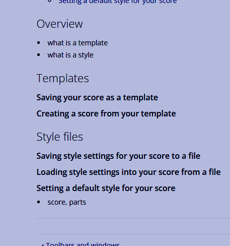

模板与样式
本章包含的信息不完整，且未反映 Musescore 4 的当前状态。请改而咨询获取帮助中列出的第三方专业人士。
用于编辑的有用信息：
- 本页建议的结构 https://musescore.org/en/node/330540/revisions/510458/view，请参阅更改及原因，\

- 结构更改及原因：模板和样式的概念与用法有很大不同。为避免混淆，概述聚焦于样式是什么，因为手册中尚未解释它。模板的解释移到了“模板”部分。
- ms3 排版概述、样式、格式>样式 https://musescore.org/en/handbook/3/layout-and-formatting
- ms3 模板 https://musescore.org/en/handbook/3/instruments-staff-setup-and-templat…
- ms3 .mss 保存 加载 https://musescore.org/en/handbook/3/layout-and-formatting#save-and-load…
- ms3 编辑 > 偏好设置 > 乐谱 https://musescore.org/en/handbook/3/preferences#default-files
- ms4 编辑 > 偏好设置 > 乐谱 https://musescore.org/en/handbook/4/preferences
- ms4 相关章节 https://musescore.org/en/handbook/4/formatting
TODO 测试
- 示例乐谱文件 B
- 部分 B1（完整乐谱）
- 格式 > 页面设置
- 格式 > 样式
- 视图 > 显示 > 显示不可见、实音等
- 单个项目属性
- 部分 B2（内置分谱，用户单击了“分谱”按钮，“添加”）
- 格式 > 页面设置
- 格式 > 样式
- 视图 > 显示 > 显示不可见、实音等
- 单个项目属性
- 部分 B3（新建的分谱，用户单击了“分谱”按钮，“添加”）
- 格式 > 页面设置
- 格式 > 样式
- 视图 > 显示 > 显示不可见、实音等
- 单个项目属性
- 将 B.mscz 移动到自定义模板文件夹，然后使用该模板创建乐谱 C
- 使用 B1、B2 创建 C1、C2 已确认
- 使用 B3 创建 C3（待测试）
- C1（完整乐谱）
- 格式 > 页面设置（待测试）
- 格式 > 样式（待测试）
- 视图 > 显示 > 显示不可见、实音等（待测试）
- 单个项目属性：所有项目（例如谱表文本）均被移除
- 添加了一个新的标题文本和框架 "Untitled" MS4 新增
- C2（分谱）
- 格式 > 页面设置（待测试）
- 格式 > 样式（待测试）
- 视图 > 显示 > 显示不可见、实音等（待测试）
- 单个项目属性：除谱表外，所有项目（标题文本和框架、谱表文本）均被移除
- C3（分谱）
- 格式 > 页面设置（待测试）
- 格式 > 样式（待测试）
- 视图 > 显示 > 显示不可见、实音等（待测试）
- 单个项目属性（待测试）
概述
样式
Musescore 中的样式是包含设置的配置文件，而不是设置本身。Musescore 中文本和音乐符号的视觉设置，有些用户误称为样式，实际上叫字体。
所有样式都是内置的，它们包含视觉和功能设置的默认值。每种对象类型，例如和弦符号对象、变音记号对象，都有对应的同名内置样式：“和弦符号样式”、“变音记号样式”。每个文本对象，例如和弦符号对象、歌词对象，也有一个或多个对应的内置样式：“和弦符号内文本样式”、“和弦符号内文本样式（替代）”、“歌词偶数行内文本样式”、“歌词奇数行内文本样式”。样式不是对象类型。
您不能创建新样式，但可以编辑每种样式中的设置值。使用“样式”窗口：格式 → 样式，或属性面板：“三个点”按钮：另存为此乐谱的默认样式。
创建对象后，您不能更改其对象类型。样式也几乎如此：乐谱上的变音记号对象必须使用“变音记号样式”中的值，不能使用“谱表文本样式”或“和弦符号样式”中的值。您不能更改乐谱上的对象所使用的样式（命名的配置文件），除非该对象是文本对象或包含文本对象。乐谱上的歌词对象，如果需要，可以使用“和弦符号内文本样式”或“谱表文本内文本样式”中的兼容值，而不是“歌词奇数行内文本样式”或“歌词偶数行内文本样式”中的值，更多信息请参见格式化文本章节。
继续阅读，了解对象的最终视觉和功能是如何确定的。
排版与格式化
MuseScore 中的排版和格式化由两个主要层级组成，文本对象和包含文本的对象有更多层级，请参见格式化文本。乐谱文件中大多数对象的最终视觉和功能由以下决定：
- 第 1 级：乐谱文件中每个单独对象的属性，例如乐谱文件上的音符、文本或符号。默认情况下，对象没有任何特定属性。当在属性面板中分配属性后，这些属性将始终被使用。
- 第 2 级：包括
- 与整个页面相关的排版和格式化设置，
- 对应“样式”窗口左窗格顶部附近的项目：格式 → 样式 → 乐谱、页面、大小、系统、小节等，以及
- 格式 → 页面设置中的设置（参见乐谱大小与间距）。
- 此外，还包括所有样式。样式中的设置值优先级低于上述属性。样式包括：
- “某类对象的样式”：例如“和弦符号样式”、“力度记号样式”，对应“样式”窗口左窗格中的项目，以及
- “某类对象内文本的样式”：例如“和弦符号内文本样式”、“歌词奇数行内文本样式”等，对应“样式”窗口内的项目：左窗格项目“文本样式”，参见格式化文本
每个乐谱文件都有一个“完整乐谱”排版。当您使用 Musescore 分谱功能生成同一乐谱的不同版本时，它还包含“分谱”。每个“分谱”和“完整乐谱”都有各自独立完整的排版和格式化信息集。
复用排版和格式化信息
- 使用模板创建新乐谱文件时，...[此条目是正在进行的工作，请补充缺失信息，参见上方 TODO，以及https://musescore.org/en/handbook/3/layout-and-formatting#concept3]
- 当前正在编辑的“分谱”（但不是“完整乐谱”）的“第 2 级信息”可以通过 格式 → 样式 → 应用于所有分谱 按钮轻松应用到所有其他“分谱”。
- 当前正在编辑的“分谱”或“完整乐谱”的“第 2 级信息”可以保存为单独的 .mss 文件（也称为样式文件）并复用到另一个乐谱（其“完整乐谱”或任何“分谱”）。复用到“完整乐谱”不会影响分谱。
- 新乐谱文件和 Musescore 分谱的默认“第 2 级信息”见下文。
访问 https://musescore.org/en/node/355981 获取其他音乐家分享的 .mss 文件。
样式文件
概念和排版逻辑已在概述中说明。.mss 文件包含“第 2 级信息”，可以存储在任何文件夹中，Musescore 不会自动使用任何特定文件夹。可以在 编辑 → 偏好设置 中设置便于文件管理的默认文件夹。
将当前正在编辑的“完整乐谱”或“分谱”的所有样式设置保存到单独的 .mss 文件
- 打开所需的“完整乐谱”或“分谱”。
- 选择 格式 → 保存样式，将其保存到您喜欢的任何文件夹。
从 .mss 文件加载到当前正在编辑的“完整乐谱”或“分谱”
- 加载或创建一个乐谱，打开所需的“完整乐谱”或“分谱”。
- 选择 格式 → 加载样式。
新乐谱文件和 Musescore 分谱的默认“第 2 级信息”
打开 偏好设置 → 乐谱选项卡
- 样式：浏览并设置 Musescore 在创建新乐谱文件时用作“第 2 级信息”的 .mss 文件。从模板创建新乐谱文件时，将使用模板中存在的信息。
- 分谱样式：与上述类似，但用于新的 Musescore 分谱。
模板
请勿与谱表/分谱属性：谱表类型模板混淆。
模板的用法在创建您的第一个乐谱和设置您的乐谱章节中有说明。乐谱模板可用于快速设置新乐谱。模板包含：
[此项目列表是正在进行的工作，请补充缺失信息，参见上方 TODO，以及\ https://musescore.org/en/handbook/3/instruments-staff-setup-and-templat…\ - itemX\ - itemY\ - itemZ\ ]
模板文件是 Musescore 使用的某个目录下的乐谱文件。您可以从头开始创建一个乐谱并将其保存为模板，或者将任何现有的 .mscz 文件复制到该目录以用作模板。模板有两种：
- MuseScore 附带的预定义系统模板，在 新建乐谱：从模板创建选项卡 中按类别排序，参见创建您的第一个乐谱。
- 自定义模板：自定义模板必须存储在模板文件夹 "Documents/MuseScore4/Templates"（可在 编辑 → 偏好设置 中设置）中。创建新乐谱时，它们位于 新建乐谱：从模板创建 选项卡：我的模板 类别中，参见设置新乐谱。
将乐谱保存为自定义模板
单击 文件 → 另存为，将乐谱文件保存为 .mscz 格式到 Musescore 使用的模板目录中。最后添加的 标题文本 的内容用作模板名称（不是 文件 → 项目属性 → 作品标题 字段的内容；也不是 MuseScore 3 中的文件名）。
从自定义模板创建乐谱
- 确保自定义模板文件位于正确的文件夹中。
- 单击 文件 → 新建 打开新建乐谱对话框
- 在 从模板创建 选项卡：我的模板 类别中选择一个模板。在 Musescore 4.1.1 中，预览窗口显示模板文件作为乐谱打开时的样子，不是从此模板创建的新乐谱的样子预览。
- 完成“新建乐谱”对话框的其余部分并退出。